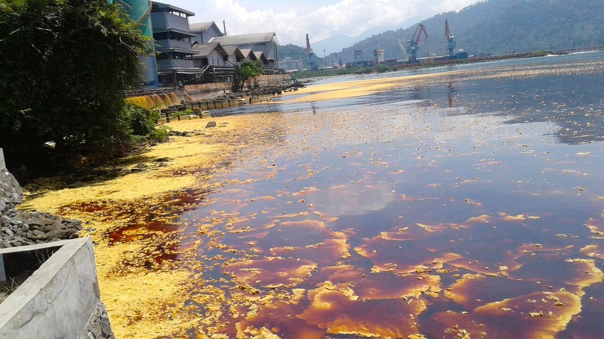
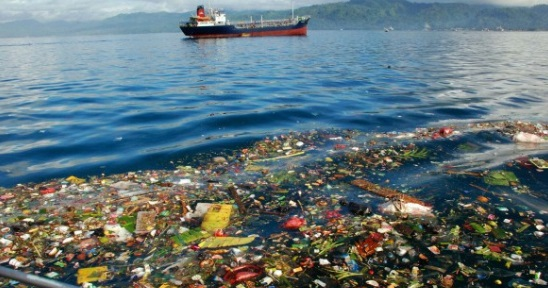
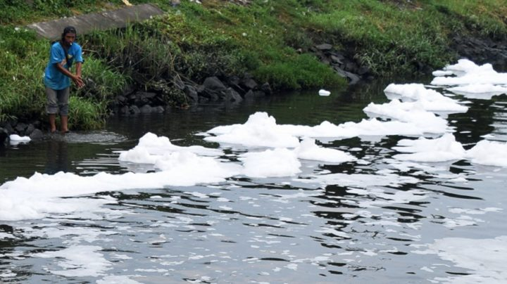

Pulau ini merupakan salah satu dari 111 pulau paling terpencil di Republik Indonesia yang terletak di Laut Andaman sebelah utara Aceh.
Pantai atau garis pantai merupakan suatu ciri geografis berupa pasir yang terdapat di wilayah pesisir. Wilayah pesisir merupakan batas antara daratan dan perairan laut.[1] Wilayah pesisir berbeda dengan garis pantai, meskipun keduanya berkaitan. Panjang pantai diukur mengelilingi seluruh pantai yang merupakan wilayah teritorial suatu negara.
Berdasarkan koreksi PBB tahun 2008, Indonesia mempunyai garis pantai terpanjang keempat di dunia setelah Amerika Serikat (AS), Kanada, dan Rusia. Panjang pantai Indonesia adalah 95.181 kilometer.
Pantai yang permukaannya relatif datar. Jenis pantai tersebut biasanya adalah Hutan Mangrove, Pantai Bukit Pasir, Pantai Delta, dan Pantai Muara
Pantai yang berada di pegunungan. Pantai ini terbentuk dari retakan-retakan yang sejajar dengan pantai, dimakan gelombang besar sehingga menimbulkan tebing terjal dan laut dalam.
Pantai bertebing yaitu pantai yang terjal sebelum menjadi tebing, karena pegunungannya langsung menuju ke pantai.
Pantai Karang yaitu pantai dengan karang di dasar lautnya.
Pernahkah Anda mencicipi air laut yang asin? Ya, itu karena air laut mengandung garam sehingga membuat air terasa asin dibandingkan air tawar yang biasanya tidak mengandung garam.
Petani garam memanfaatkan pantai untuk mengumpulkan garam di air laut dengan cara mengeringkan air laut sehingga hanya garamnya yang tersisa untuk proses penguapan. Garam ini kemudian dijual dan sebagian dimanfaatkan oleh petani garam sendiri.
Keindahan pantai menjadi salah satu destinasi wisata bahari yang sangat digemari oleh berbagai kalangan masyarakat. Mulai dari orang tua bahkan anak kecil pun senang pergi ke pantai.
Pihak pantai biasanya melakukan foto selfie dan/atau gambar matahari terbit atau terbenam yang menjadi subjek foto pantai idolanya.
Wisata pantai seringkali juga menawarkan beragam atraksi, mulai dari sekadar bermain air di tepi pantai hingga menyelam dan snorkeling di kawasan laut sekitar pantai.
Nelayan datang dan pergi dengan cepat menyusuri pantai dengan perahu mereka. Hal ini sangat bergantung pada kondisi pantai itu sendiri. Para nelayan ini mencari ikan dan/atau sumber daya laut lainnya dengan memanfaatkan keberadaan pantai.
Dengan banyaknya restoran modern yang bermunculan saat ini, bukan tidak mungkin menjadikan pantai sebagai tempat restoran. Tersedia beragam makanan laut dan panorama indah menambah keindahannya.
Destinasi wisata pantai ini dapat menghasilkan potensi pendapatan baik bagi penduduk lokal maupun negara pengelola pantai. Artinya menjadi sumber pendapatan penunjang perekonomian daerah.
Pencemaran laut adalah pelepasan partikel kimia, limbah industri, pertanian dan domestik, kebisingan ke laut, atau penyebaran organisme invasif (alien) yang dapat menimbulkan dampak berbahaya.
Kecelakaan sering terjadi pada kapal tanker yang membawa minyak dalam jumlah besar sehingga mengakibatkan tumpahan minyak ke laut. setiap tahun Minyak mempunyai dampak yang luas terhadap hewan dan tumbuhan yang hidup di daerah tersebut.
Sekitar 80 persen sampah laut adalah plastik. Plastik dan sampah plastik turunan lainnya yang ditemukan di laut berbahaya bagi satwa liar dan perikanan.
Polusi yang disebabkan oleh pestisida bersifat kumulatif. Insektisida digunakan dengan sengaja untuk mengendalikan hama tanaman atau organisme lain yang tidak diinginkan. Beberapa pestisida yang digunakan berasal dari golongan bahan kimia organoklorin.
Pulau ini terletak di ujung barat Indonesia. Pulau ini tidak terlalu besar dan memiliki tiga pantai yang sangat indah yaitu Anoi Itam, Gapang dan Iboih.

Keindahan pantai-pantai di kawasan Sumba memang sudah tidak perlu diragukan lagi. Salah satunya adalah Pantai Nihiwatu, pantai sepanjang 2,5 km ini masuk dalam 20 pantai terbaik di dunia.

Keindahan pantai-pantai di kawasan Sumba memang sudah tidak perlu diragukan lagi. Salah satunya adalah Pantai Nihiwatu, pantai sepanjang 2,5 km ini masuk dalam 20 pantai terbaik di dunia.

Keindahan pantai-pantai di kawasan Sumba memang sudah tidak perlu diragukan lagi. Salah satunya adalah Pantai Nihiwatu, pantai sepanjang 2,5 km ini masuk dalam 20 pantai terbaik di dunia.

Keindahan alam Raja Ampat sudah dikenal hingga ke luar negeri. Lautnya yang biru jernih dan alamnya yang asri pasti bikin kamu ketagihan berlibur ke sini!

Penggemar diving dan snorkeling wajib mengunjungi Teluk Tomin di Sulawesi Utara. Tempat ini belum banyak terpengaruh, keindahan alamnya masih sangat terjaga.

Pulau ini terletak di sebelah timur Kepulauan Banda di tenggara Maluku. Pulau Hatta tidak ada listrik sama sekali. Di sini Anda bisa menikmati keindahan pantai, snorkeling dan diving.
Salah satu aktivitas unik di Pulau Derawan adalah berenang bersama ubur-ubur. Tenang saja, ubur-ubur di sini tidak beracun! Selain itu, kamu juga bisa berenang di laut biru luas yang indah!

Semua Gili atau pulau-pulau di sekitar Lombok indah. Diantara ketiga Gili besar, Gili Trawangan lah yang paling populer. Anda tidak akan menemukan kendaraan bermotor di sini. Kalau mau jalan kaki bisa pakai sepeda!

Jika Anda pernah menonton film Laskar Pelang pasti tahu pulau yang satu ini. Salah satu pantai paling terkenal di pulau ini adalah Pantai Tanjung Tinggi yang dulunya digunakan untuk syuting.
Pulau ini merupakan salah satu dari 111 pulau paling terpencil di Republik Indonesia yang terletak di Laut Andaman sebelah utara Aceh.
Pantai Nihiwatu Sumba merupakan pantai yang bertujuan untuk memberikan pengunjung kenikmatan berselancar layaknya peselancar kelas dunia.
Pantai Ora adalah sebuah pantai yang terletak di Pulau Seram, Kecamatan Seram Utara, Maluku Tengah, Maluku, Indonesia.
Pantai Merah Muda, juga dikenal sebagai Pantai Merah, di Pulau Komodo adalah salah satu dari tujuh pantai berpasir merah terang di dunia.
Destinasi wisata di Indonesia yang satu ini wajib anda kunjungi karena keindahan tempat ini sangat luar biasa... Jika anda mempunyai hobi menyelam, belum lengkap rasanya jika tidak mencoba mengunjungi tempat ini.
Pulau Hatta adalah sebuah pulau kecil yang terletak di Kepulauan Banda, tepatnya di Maluku, Indonesia.
Gili Trawangan merupakan salah satu pusat wisata Lombok. Gili Trawangan dapat diakses dengan speedboat dari Lombok dan speedboat dari Bali.
Harus diakui, destinasi wisata di Pulau Belitung semakin dilirik sejak kemunculan Film Laskar Pelangi. Sejak itu pula pulau ini lebih kental pada sebutan Negeri Laskar Pelangi.